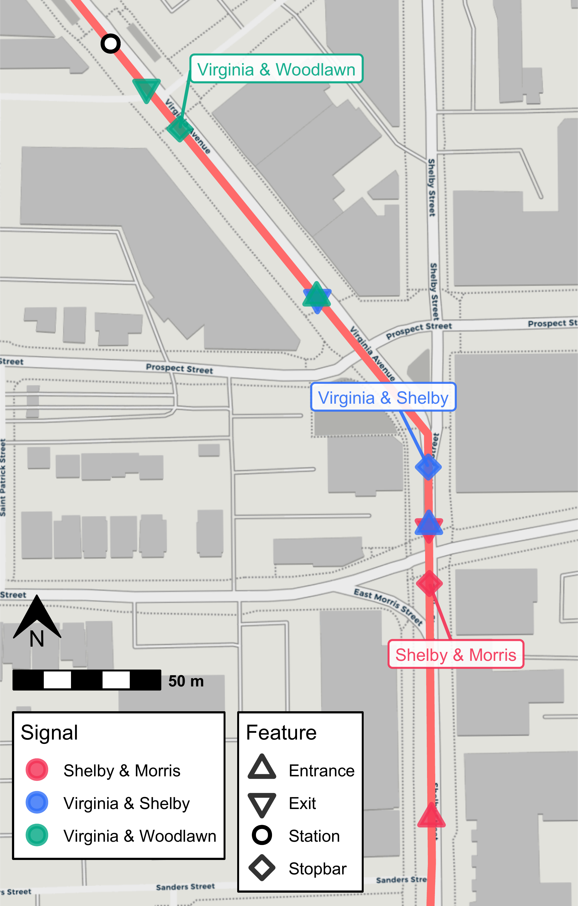
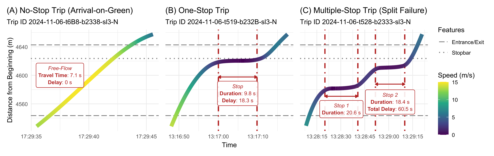
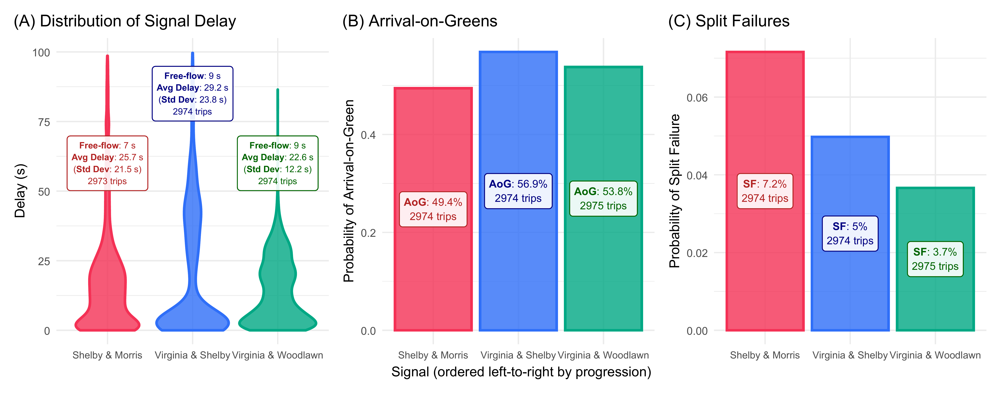

Estimating Signal Performance Measures Using Reconstructed Trajectories
Source:vignettes/articles/paper_tspms.Rmd
paper_tspms.RmdIntroduction
This vignette contains all code use to estimate and visualize the
signal performance measures presented in our paper. This demonstrates
how transittraj’s predict() method for
trajectory objects can easily estimate custom microscopic performance
metrics.
This vignette is intended to complement our paper. Check out the full paper for a more thorough discussion of this methodology.
Data
We’ve loaded the following data into our RStudio environment for this vignette:
traj: The reconstructed trajectory objects, as demonstrated in the data cleaning vignette.route_geom: The Red Line’s northbound alignment, as retrieved from IndyGo’s GTFS viatransittraj::get_shape_geometry().stops: The distance of each northbound Red Line stop along its alignment, as retrieved from IndyGo’s GTFS viatransittraj::get_stop_distances().signals: The distance of each north- and south-bound signal stopbar along the northbound route alignment. These were identified using OpenStreetMap data and Google Earth satellite imagery, then projected onto the route viatransittraj::project_onto_route().
We can begin by loading the packages we’ll need:
# For analysis
library(transittraj)
library(tidyverse)
# For plotting
library(marquee)
library(patchwork)
library(ggspatial)Next, we’ll set some parameters for our visualizations:
# colors
my_r <- "#f43155"
my_b <- "#2f6ff8"
my_g <- "#00A884"
# marquee
marquee_label <- function(border = "firebrick") {
lab <- classic_style(
margin = trbl(0),
padding = trbl(4),
border = border,
border_width = trbl(1),
border_radius = 3,
align = "center"
)
return(lab)
}
# Benchmark
bench_iter <- 20Let’s briefly explore our data. First, we can print a summary of our
fit trajectory object traj. This tells us that, with the
cleaning parameters used, we have 3100 valid trips. Trajectories were
fit using VCHIP-ME interpolating splines.
summary(traj)
#> ------
#> AVL Group Trajectory Object
#> ------
#> Number of trips: 3100
#> Total distance range: 0 to 20499.99
#> Total time range: 1730433602 to 1735707538
#> ------
#> Trajectory function present: TRUE
#> --> Trajectory interpolation method: monoH.FC
#> --> Maximum derivative: 3
#> --> Fit with speeds: TRUE
#> Inverse function present: TRUE
#> --> Inverse function tolerance: 0.01
#> ------Next, we’ll demonstrate our spatial data. Each row of
stops contains the stop’s name, ID, and distance from the
beginning terminal of the northbound Red Line:
head(stops)
#> # A tibble: 6 × 3
#> stop_id stop_name distance
#> <chr> <chr> <dbl>
#> 1 70052 University 0
#> 2 70051 Troy 1478.
#> 3 70049 Garfield Park 2245.
#> 4 70047 Raymond 3113.
#> 5 70045 Pleasant Run 3794.
#> 6 70043 Fountain Square 4846.Similarly, signals contains each signal name and its
distance from the northbound Red Line’s beginning terminal. Each signal
has two entries: one for the NB stopbar, and one for the SB.
head(signals)
#> name distance routes
#> 1 Shelby & Wesley 9.759449 90N
#> 2 Shelby & Wesley 39.076864 90S
#> 3 Shelby & Sumner 602.254030 90N
#> 4 Shelby & Sumner 645.204846 90S
#> 5 Shelby & Troy 1410.097237 90N
#> 6 Shelby & Troy 1449.998303 90SSpatial Setup
With our data loaded, we’ll want to define entrance and exit points for each analysis signal. We’ll begin by defining the corridor we’re studying:
# Define filtering parameters
analysis_sigs <- c("Shelby & Morris",
"Virginia & Shelby",
"Virginia & Woodlawn")
analysis_stops <- c("Fountain Square")
# Filter
sigs_filt <- signals %>%
filter(name %in% analysis_sigs)
sigs_NB <- sigs_filt %>%
filter(routes == "90N") %>%
select(-routes)
stops_filt <- stops %>%
filter(stop_name %in% analysis_stops)With this, we’ll calculate the entrance and exit points. Exits are taken as the SB stopbar’s location (except for Virginia & Woodlawn, where we move up the exit point slightly to avoid the Fountain Square bus stop). Next, entrances are taken as 80 meters upstream of Shelby & Morris, and at the preceding signal’s exit point at Virginia & Shelby and Virginia & Woodlawn. We leave slight gaps – less than 1 meter – between the zones to prevent overlap.
# Opposing stopbar as exit point for all
sig_exits <- sigs_filt %>%
filter(routes == "90S") %>%
select(name, distance) %>%
mutate(inout = "Exit",
distance = if_else(condition = (name == "Virginia & Woodlawn"),
true = distance - 26,
false = distance))
# Entrance -- offset to match previous signal
sig_enters <- sigs_filt %>%
filter(routes == "90N") %>%
select(name, distance) %>%
mutate(distance = case_when(
name == "Shelby & Morris" ~ distance - 80,
name == "Virginia & Shelby" ~ distance - 20,
name == "Virginia & Woodlawn" ~ distance - 74
),
inout = "Entrance")
# Combine
sig_bnds <- rbind(sig_enters, sig_exits) %>% arrange(distance)
sigs_sf <- sf::st_line_interpolate(line = route_geom %>% sf::st_as_sfc(),
dist = sigs_NB$distance) %>%
sf::st_sf() %>%
mutate(name = sigs_NB$name,
inout = "Stopbar")
sig_bnds_sf <- sf::st_line_interpolate(line = route_geom %>% sf::st_as_sfc(),
dist = sig_bnds$distance) %>%
sf::st_sf() %>%
mutate(name = sig_bnds$name,
inout = sig_bnds$inout)
stops_sf <- sf::st_line_interpolate(line = route_geom %>% sf::st_as_sfc(),
dist = stops_filt$distance) %>%
sf::st_sf() %>%
mutate(name = stops_filt$stop_name)We can now check out our bounding points:
knitr::kable(sig_bnds)| name | distance | inout |
|---|---|---|
| Shelby & Morris | 4543.542 | Entrance |
| Shelby & Morris | 4642.621 | Exit |
| Virginia & Shelby | 4643.255 | Entrance |
| Virginia & Shelby | 4734.276 | Exit |
| Virginia & Woodlawn | 4734.695 | Entrance |
| Virginia & Woodlawn | 4826.692 | Exit |
And we can visualize them along the route alignment:
# Bounding box
indy_crs <- 32616
bbox <- sf::st_bbox(sig_bnds_sf)
d_x <- 50 # m, x bbox expand
d_y <- 30 # m, y bbox expand
plot_bbox <- sf::st_bbox(c(bbox[1] - d_x,
bbox[2] - d_y,
bbox[3] + d_x,
bbox[4] + d_y),
crs = indy_crs)
# Map
sigs_map <- ggplot(data = rbind(sigs_sf, sig_bnds_sf)) +
annotation_map_tile(type = "cartolight",
zoomin = 0, progress = "none") +
geom_sf(data = route_geom, color = "indianred1",
linewidth = 2) +
annotation_north_arrow(which_north = "true",
location = "bl",
style = north_arrow_orienteering(fill = c("black", "black")),
height = unit(25, "pt"),
width = unit(25, "pt"),
pad_y = unit(140, "pt")) +
annotation_scale(width_hint = 0.3,
location = "bl",
line_width = 1.5,
height = unit(10, "pt"),
text_face = "bold",
pad_y = unit(115, "pt"),
style = "bar") +
geom_sf(aes(color = name, shape = inout, fill = name),
size = 3.2, stroke = 1.8,
alpha = 0.8) +
geom_sf(data = stops_sf,
aes(shape = "Station"),
color = "black", fill = "white", stroke = 1.5, size = 3) +
geom_spatial_label_repel(data = sigs_sf,
aes(label = name, color = name,
x = sf::st_coordinates(sigs_sf)[,1],
y = sf::st_coordinates(sigs_sf)[,2]),
crs = indy_crs,
size = 3.2, alpha = 0.9, box.padding = 2,
segment.size = 0.8, label.size = 0.5,
show.legend = FALSE, seed = 0) +
scale_color_manual(name = "Signal",
values = c("Shelby & Morris" = my_r,
"Virginia & Shelby" = my_b,
"Virginia & Woodlawn" = my_g)) +
scale_fill_manual(name = "Signal",
values = c("Shelby & Morris" = my_r,
"Virginia & Shelby" = my_b,
"Virginia & Woodlawn" = my_g)) +
scale_shape_manual(name = "Feature",
values = c("Entrance" = 24,
"Exit" = 25,
"Stopbar" = 23,
"Station" = 21)) +
theme_void() +
coord_sf(xlim = c(plot_bbox["xmin"], plot_bbox["xmax"]),
ylim = c(plot_bbox["ymin"], plot_bbox["ymax"]),
crs = indy_crs, expand = FALSE) +
theme(legend.position = c(0.325, 0.115),
legend.background = element_rect(fill = "white",
color = "black",
linewidth = 0.5, linetype = "solid"),
legend.box = "horizontal",
legend.margin = margin(4, 4, 4, 4, unit = "pt"))
sigs_map
Calculation of Performance Metrics
With our setup of spatial data complete, we can now use
transittraj to estimate our signal performance measures.
Here, we estimate three:
Signal delay, using
predict()’snew_distancesinput.Arrival-on-green, using
predict()’sdistance_limsandtimestepinputs.Split failures (SF), using the same
predict()call as AoG.
As with the cleaning vignette, we wrap each predict()
call in bench::mark() to record the processing time. We
repeat each call 20 times and report the median processing time.
Signal Delay
We’ll begin with signal delay. For this, we’ll simply pass our signal
boundings sig_bnds to predict(). This will
calculate the time each trip crossed each row in
sig_bnds.
bm_crossings <- bench::mark(
# transittraj
predict(object = traj,
new_distances = sig_bnds),
# benchmark
time_unit = "s", check = TRUE, iterations = bench_iter, min_time = Inf
)
#> Warning: Some expressions had a GC in every iteration; so filtering is disabled.
sig_crossings <- bm_crossings$result[[1]]Each row of sig_crossings will represent each trip’s
crossing time through each exit and entrance point. If we pivot these
rows to separate columns, we can subtract them to estimate each trip’s
travel time and delay through each signal.
# Pivot to calculate travel times
sig_tt <- sig_crossings %>%
select(-distance) %>%
pivot_wider(id_cols = c("trip_id_performed", "name"), names_from = inout,
values_from = interp) %>%
mutate(travel_time = Exit - Entrance) %>%
filter(!is.na(travel_time))
# Summary stats -- including free-flow times by signal
sig_ff <- sig_tt %>%
group_by(name) %>%
summarize(min_tt = min(travel_time),
max_tt = max(travel_time),
tt_85th = quantile(travel_time, 0.85),
free_flow = quantile(travel_time, 0.05),
mean_tt = mean(travel_time),
std_tt = sd(travel_time),
n_trips = n())
# Delay
sig_delay <- sig_tt %>%
left_join(y = (sig_ff %>% select(name, free_flow)),
by = "name") %>%
mutate(delay = pmax(0, travel_time - free_flow))Let’s see what this look like:
head(sig_delay)
#> # A tibble: 6 × 7
#> trip_id_performed name Entrance Exit travel_time free_flow delay
#> <chr> <chr> <dbl> <dbl> <dbl> <dbl> <dbl>
#> 1 2024-10-31-t19-b233E-sl3-N Shelby & Morris 1730435778. 1730435810. 31.3 7.38 23.9
#> 2 2024-10-31-t2D-b233A-sl3-N Shelby & Morris 1730436767. 1730436780. 13.0 7.38 5.64
#> 3 2024-10-31-t5-b233D-sl3-N Shelby & Morris 1730434557. 1730434574. 17.4 7.38 9.98
#> 4 2024-11-01-t19-b233E-sl3-N Shelby & Morris 1730522390. 1730522439. 48.9 7.38 41.5
#> 5 2024-11-01-t1FC-b232C-sl3-N Shelby & Morris 1730452895. 1730452988. 93.4 7.38 86.0
#> 6 2024-11-01-t20B-b232D-sl3-N Shelby & Morris 1730453492. 1730453499. 7.04 7.38 0Each trip’s traversal through each signal corresponds to one row. Each traversal has a travel time, free-flow time, and estimated control delay. The free-flow time is dependent only upon the signal, and is the same for all trips through the same signal.
Arrival-on-Green & Split Failures
For both of these metric’s, we’ll want to know how many stops each
trip made. We will use the predict() method with the
distance_lims and timestep inputs. In
distance_lims we specify the entire length of the corridor
(alternatively, you could run three separate predict()
calls, with each specifying the bounds of one signal). In
timestep we specify the temporal resolution of each trip’s
interpolated points between these distance bounds. Finally, using
deriv = c(0, 1), we ask predict() to return
both the position and speed of each trip at each timepoint. The raw
output includes separate rows for the speed and distance calculation at
each timepoint; we’ll pivot those to separate columns, such that each
row corresponds to one timepoint of one trip.
timestep = 0.1 # seconds
step_bounds <- c(min(sig_bnds$distance), max(sig_bnds$distance))
# Predict: get distances & speeds
bm_interp <- bench::mark(
# transittraj
predict(object = traj,
distance_lims = step_bounds,
timestep = timestep,
deriv = c(0, 1)),
# benchmark
time_unit = "s", check = TRUE, iterations = bench_iter, min_time = Inf
)
#> Warning: Some expressions had a GC in every iteration; so filtering is disabled.
trip_dists <- bm_interp$result[[1]]
# Pivot wider: give dist & speed separate columns
trip_dists_piv <- trip_dists %>%
pivot_wider(id_cols = c("trip_id_performed", "event_timestamp"),
names_from = "deriv", names_glue = "interp_{.name}",
values_from = "interp") %>%
rename(distance = interp_0,
speed = interp_1)Let’s take a look at this output:
head(trip_dists_piv) %>%
mutate(event_timestamp = sprintf(event_timestamp, fmt = "%.1f"),
distance = sprintf(distance, fmt = "%.2f"),
speed = sprintf(speed, fmt = "%.2f"))
#> # A tibble: 6 × 4
#> trip_id_performed event_timestamp distance speed
#> <chr> <chr> <chr> <chr>
#> 1 2024-10-31-t19-b233E-sl3-N 1730435778.2 4543.53 11.87
#> 2 2024-10-31-t19-b233E-sl3-N 1730435778.3 4544.71 11.83
#> 3 2024-10-31-t19-b233E-sl3-N 1730435778.4 4545.89 11.79
#> 4 2024-10-31-t19-b233E-sl3-N 1730435778.5 4547.07 11.75
#> 5 2024-10-31-t19-b233E-sl3-N 1730435778.6 4548.24 11.71
#> 6 2024-10-31-t19-b233E-sl3-N 1730435778.7 4549.41 11.66For each trip, we have a series of timestamps incrementing by 0.1
seconds, as we requested through timestep. Each timestep
has a corresponding distance and speed estimate.
With this dataframe, we’ll identify segments where each trip is stopped. We’ll consider anything with a speed below 1.341 meters per second, roughly 3 mph, to be a stop, and use run line encoding (RLE) to identify successive points at or below this cutoff. Finally, we’ll divide these points up by the signal bounding zones.
# Set up RLE
stop_cutoff <- 1.341 # m/s, roughly 3 mph
stopped_rle_fun <- function(is_stopped, trip_id_performed) {
rle_obj <- rle(x = is_stopped)
out_vec <- rep(x = seq_along(rle_obj$values), times = rle_obj$length)
return(out_vec)
}
sig_bnds_join <- sig_bnds %>%
pivot_wider(id_cols = "name", names_from = "inout", values_from = "distance")
# RLE
trip_stops <- trip_dists_piv %>%
left_join(y = sig_bnds_join,
join_by(distance >= Entrance, distance <= Exit)) %>%
select(-c(Entrance, Exit)) %>%
filter(!is.na(name)) %>%
mutate(is_stopped = as.numeric(speed < stop_cutoff)) %>%
arrange(trip_id_performed, event_timestamp) %>%
group_by(trip_id_performed, name) %>%
mutate(run_index = stopped_rle_fun(is_stopped = is_stopped),
run_id = paste(trip_id_performed, name, run_index,
sep = "-")) %>%
ungroup()
trip_events <- trip_stops %>%
group_by(name, run_id) %>%
summarize(trip_id_performed = first(trip_id_performed),
is_stopped = max(is_stopped),
time_begin = min(event_timestamp),
time_end = max(event_timestamp),
dist_begin = min(distance),
dist_end = max(distance),
dist_traveled = dist_end - dist_begin,
time_elapsed = time_end - time_begin,
.groups = "keep")
trip_sig_stops <- trip_events %>%
group_by(name, trip_id_performed) %>%
summarize(num_stops = sum(is_stopped),
.groups = "keep") %>%
mutate(makes_stop = as.numeric(num_stops > 0),
makes_multiple_stops = as.numeric(num_stops > 1))Let’s look at output. After summarizing the RLE, we have the number of stops each trip makes:
head(trip_sig_stops)
#> # A tibble: 6 × 5
#> # Groups: name, trip_id_performed [6]
#> name trip_id_performed num_stops makes_stop makes_multiple_stops
#> <chr> <chr> <dbl> <dbl> <dbl>
#> 1 Shelby & Morris 2024-10-31-t19-b233E-sl3-N 1 1 0
#> 2 Shelby & Morris 2024-10-31-t2D-b233A-sl3-N 0 0 0
#> 3 Shelby & Morris 2024-10-31-t5-b233D-sl3-N 0 0 0
#> 4 Shelby & Morris 2024-11-01-t19-b233E-sl3-N 1 1 0
#> 5 Shelby & Morris 2024-11-01-t1FC-b232C-sl3-N 1 1 0
#> 6 Shelby & Morris 2024-11-01-t20B-b232D-sl3-N 0 0 0This is all the data we need to easily estimate AoG and SF:
# Calculate AOG & SFs by time period
aog <- trip_sig_stops %>%
group_by(name) %>%
summarize(num_trips = n(),
num_stops = sum(makes_stop),
.groups = "keep") %>%
mutate(num_thrus = num_trips - num_stops,
est_AOG = num_thrus / num_trips)
split_failures <- trip_sig_stops %>%
group_by(name) %>%
summarize(num_trips = n(),
num_mult_stops = sum(makes_multiple_stops),
.groups = "keep") %>%
mutate(sf = num_mult_stops / num_trips)Results
Example Trajectories
We now have estimates for each signal’s control delay, AoG, and SF over the study period, aggregated over all times of day and days of the week. Before exploring these results, we’ll use them to visualize some example trajectories:
# - Setup -
plot_sig <- "Shelby & Morris"
sig_bounds <- sig_bnds %>%
filter(name == "Shelby & Morris") %>%
pull(distance)
plot_lims <- c(sig_bounds[1] - 15,
sig_bounds[2] + 15)
stopbars_filt <- sigs_NB %>%
filter(distance > plot_lims[1] &
distance < plot_lims[2])
# - AoG (A) -
plot_trip1 <- "2024-11-06-t6B8-b2338-sl3-N"
plot_df1 <- predict(object = traj,
distance_lims = plot_lims,
timestep = timestep,
trip = plot_trip1,
deriv = c(0, 1)) %>%
pivot_wider(id_cols = c("trip_id_performed", "event_timestamp"),
values_from = "interp", names_from = deriv) %>%
rename(distance = `0`,
speed = `1`) %>%
mutate(event_timestamp = as.POSIXct(event_timestamp, tz = "America/New_York"))
lab_df1 <- data.frame(x = quantile(plot_df1$event_timestamp, 0.20),
y = 4600,
trip_id_performed = plot_trip1,
name = plot_sig) %>%
left_join(y = (sig_delay %>% select(trip_id_performed, name, travel_time, delay)),
by = c("trip_id_performed", "name")) %>%
mutate(travel_time = round(travel_time, 1),
delay = round(delay, 1),
lab = paste("*Free-Flow* \n",
"**Travel Time**: ", travel_time, " s \n",
"**Delay**: ", delay, " s",
sep = ""))
aog_plot <- ggplot() +
geom_hline(aes(yintercept = sig_bounds, linetype = "Entrance/Exit"),
color = "grey50", linewidth = 0.6) +
geom_hline(data = stopbars_filt,
aes(yintercept = distance, linetype = "Stopbar"),
linewidth = 0.8, color = "grey50") +
geom_line(data = plot_df1,
aes(x = event_timestamp, y = distance, color = speed),
linewidth = 3) +
geom_marquee(data = lab_df1,
aes(x = x, y = y, label = lab),
hjust = 0.5, size = 3, color = "firebrick", fill = "#FFFFFFE6",
style = marquee_label("firebrick")) +
scale_linetype_manual(name = "Features",
values = c("Entrance/Exit" = "longdash",
"Stopbar" = "dotted")) +
scale_color_viridis_c(name = "Speed (m/s)",
limits = c(0, 15)) +
scale_x_datetime(date_labels = "%H:%M:%S") +
scale_y_continuous(limits = plot_lims) +
theme_minimal() +
labs(x = "Time",
y = "Distance from Beginning (m)",
title = "(A) No-Stop Trip (Arrival-on-Green)",
subtitle = paste("Trip ID ", plot_trip1,
sep = "")) +
theme(plot.title.position = "plot")
# - One Stop (B) -
plot_trip2 <- "2024-11-06-t519-b232B-sl3-N"
plot_df2 <- predict(object = traj,
distance_lims = plot_lims,
timestep = timestep,
trip = plot_trip2,
deriv = c(0, 1)) %>%
pivot_wider(id_cols = c("trip_id_performed", "event_timestamp"),
values_from = "interp", names_from = deriv) %>%
rename(distance = `0`,
speed = `1`) %>%
mutate(event_timestamp = as.POSIXct(event_timestamp, tz = "America/New_York"))
stop_df2 <- trip_events %>%
ungroup() %>%
filter((trip_id_performed == plot_trip2) &
(is_stopped == 1) &
(name == plot_sig)) %>%
select(trip_id_performed, name, time_begin, time_end, time_elapsed) %>%
left_join(y = sig_delay %>% select(trip_id_performed, name, delay, travel_time),
by = c("trip_id_performed", "name")) %>%
mutate(time_elapsed = round(time_elapsed, 1),
delay = round(delay, 1),
travel_time = round(travel_time, 1),
lab = paste("*Stop* \n",
"**Duration**: ", time_elapsed, " s \n",
"**Delay**: ", delay, " s",
sep = ""),
x = (time_begin + time_end) / 2,
y = sig_bounds[2] - 60)
del_plot <- ggplot() +
geom_hline(aes(yintercept = sig_bounds, linetype = "Entrance/Exit"),
color = "grey50", linewidth = 0.6) +
geom_hline(data = stopbars_filt,
aes(yintercept = distance, linetype = "Stopbar"),
linewidth = 0.8, color = "grey50") +
geom_vline(data = stop_df2,
aes(xintercept = time_begin),
color = "firebrick", linewidth = 1, linetype = "dotdash") +
geom_vline(data = stop_df2,
aes(xintercept = time_end),
color = "firebrick", linewidth = 1, linetype = "dotdash") +
geom_line(data = plot_df2,
aes(x = event_timestamp, y = distance, color = speed),
linewidth = 3) +
geom_segment(data = stop_df2,
aes(x = time_begin, xend = time_end,
y = y + 15, yend = y + 15),
arrow = arrow(ends = "both", type = "closed", length = unit(0.025, units = "npc")),
color = "firebrick", linetype = "solid", linewidth = 0.7) +
geom_marquee(data = stop_df2,
aes(x = x, y = y - 8, label = lab),
hjust = 0.5, size = 3, color = "firebrick", fill = "#FFFFFFE6",
style = marquee_label("firebrick")) +
scale_linetype_manual(name = "Features",
values = c("Entrance/Exit" = "longdash",
"Stopbar" = "dotted")) +
scale_color_viridis_c(name = "Speed (m/s)",
limits = c(0, 15)) +
scale_x_datetime(date_labels = "%H:%M:%S") +
scale_y_continuous(limits = plot_lims) +
theme_minimal() +
labs(x = "Time",
y = "Distance from Beginning (m)",
title = "(B) One-Stop Trip",
subtitle = paste("Trip ID ", plot_trip2,
sep = "")) +
theme(plot.title.position = "plot")
# - SF (C) -
plot_trip3 <- "2024-11-06-t528-b2333-sl3-N"
plot_df3 <- predict(object = traj,
distance_lims = plot_lims,
timestep = timestep,
trip = plot_trip3,
deriv = c(0, 1)) %>%
pivot_wider(id_cols = c("trip_id_performed", "event_timestamp"),
values_from = "interp", names_from = deriv) %>%
rename(distance = `0`,
speed = `1`) %>%
mutate(event_timestamp = as.POSIXct(event_timestamp, tz = "America/New_York"))
stop_df3 <- trip_events %>%
ungroup() %>%
filter((trip_id_performed == plot_trip3) &
(is_stopped == 1) &
(name == plot_sig)) %>%
select(trip_id_performed, name, time_begin, time_end, time_elapsed) %>%
left_join(y = sig_delay %>% select(trip_id_performed, name, delay),
by = c("trip_id_performed", "name")) %>%
mutate(time_elapsed = round(time_elapsed, 1),
delay = round(delay, 1),
lab = case_when(
row_number() == 1 ~ paste("*Stop ", row_number(), "* \n",
"**Duration**: ", time_elapsed, " s",
sep = ""),
row_number() == 2 ~ paste("*Stop ", row_number(), "* \n",
"**Duration**: ", time_elapsed, " s \n",
"**Total Delay**: ", delay, " s",
sep = "")
),
x = (time_begin + time_end) / 2,
y = c(sig_bounds[2] - 82, sig_bounds[2] - 65))
sf_plot <- ggplot() +
geom_hline(aes(yintercept = sig_bounds, linetype = "Entrance/Exit"),
color = "grey50", linewidth = 0.6) +
geom_vline(data = stop_df3,
aes(xintercept = time_begin),
color = "firebrick", linewidth = 1, linetype = "dotdash") +
geom_vline(data = stop_df3,
aes(xintercept = time_end),
color = "firebrick", linewidth = 1, linetype = "dotdash") +
geom_hline(data = stopbars_filt,
aes(yintercept = distance, linetype = "Stopbar"),
linewidth = 0.8, color = "grey50") +
geom_line(data = plot_df3,
aes(x = event_timestamp, y = distance, color = speed),
linewidth = 3) +
geom_segment(data = stop_df3,
aes(x = time_begin, xend = time_end, y = y + 10, yend = y + 10),
arrow = arrow(ends = "both", type = "closed", length = unit(0.025, units = "npc")),
color = "firebrick", linetype = "solid", linewidth = 0.7) +
geom_marquee(data = stop_df3,
aes(x = x, y = c(stop_df3$y[1] - 8, stop_df3$y[1] + 2), label = lab),
hjust = 0.5, size = 3, color = "firebrick", fill = "#FFFFFFE6",
style = marquee_label("firebrick")) +
scale_linetype_manual(name = "Features",
values = c("Entrance/Exit" = "longdash",
"Stopbar" = "dotted")) +
scale_color_viridis_c(name = "Speed (m/s)",
limits = c(0, 15)) +
scale_x_datetime(date_labels = "%H:%M:%S") +
scale_y_continuous(limits = plot_lims) +
theme_minimal() +
labs(x = "Time",
y = "Distance from Beginning (m)",
title = "(C) Multiple-Stop Trip (Split Failure)",
subtitle = paste("Trip ID ", plot_trip3,
sep = "")) +
theme(plot.title.position = "plot")
# - Combine -
combo_plot <- aog_plot + del_plot + sf_plot +
plot_layout(nrow = 1, ncol = 3,
axis_titles = "collect", guides = "collect", axes = "collect")
combo_plot
Another way to visualize these is through animations. For
non-technical audiences, these give a better idea of how these different
conditions may effect passenger experience. transittraj
supports two: animated maps and animated lines. For either, we can begin
by setting our formatting parameters. See
help(plot_animated_map) for a more thorough discussion on
how this formatting works.
anim_df <- rbind(
plot_df1 %>%
mutate(Type = "No-Stop"),
plot_df2 %>%
mutate(Type = "One-Stop"),
plot_df3 %>%
mutate(Type = "Multiple-Stop")
)
# All features to plot
plot_features <- rbind(
sig_bnds %>%
filter(name %in% plot_sig) %>%
select(distance) %>%
mutate(Feature = "Entrance/Exit"),
sigs_NB %>%
filter(name %in% plot_sig) %>%
select(distance) %>%
mutate(Feature = "Stopbar")
)
# Trips tp plot
plot_trips <- c(plot_trip1, # No stop
plot_trip2, # One stop
plot_trip3) # SF
# Formatting
feat_format <- plot_features %>%
mutate(shape = c(4, 4, 20)) %>%
select(Feature, shape) %>%
distinct(Feature, shape)
veh_format <- data.frame(Type = c("No-Stop",
"One-Stop",
"Multiple-Stop"),
shape = c(21, 24, 25),
outline = c(my_r, my_b, my_g)
)Next, we’ll call plot_animated_map() to generate our
animation object. Before rendering the vignette, we’ve uploaded the
output video to YouTube and embedded it below.
# Base anim
map_anim <- plot_animated_map(
# Traj data
distance_df = anim_df,
center_vehicles = TRUE,
# Spatial data
shape_geometry = route_geom, distance_lims = plot_lims, bbox_expand = 20,
background = "osm",
# Route formatting
route_color = "red4", route_width = 2.7,
# Vehicle formatting
veh_shape = veh_format, veh_outline = veh_format,
veh_stroke = 2.5, veh_alpha = 0.9,
# Feature formatting
feature_distances = plot_features,
feature_outline = "grey50", feature_shape = feat_format,
feature_stroke = 2, feature_size = 3
)
# Extra Formatting
map_anim <- map_anim +
labs(title = "Example Trajectories")
map_animFinally, we’ll generate an animated line using
plot_animated_line(). We can use the same formatting
parameters defined above.
# Base anim
line_anim <- plot_animated_line(
# Traj data
distance_df = anim_df,
center_vehicles = TRUE,
# Spatial data
distance_lims = plot_lims,
# Route formatting
route_color = "red4", route_width = 2.7,
# Vehicle formatting
veh_shape = veh_format, veh_outline = veh_format,
veh_stroke = 2.5, veh_alpha = 0.9,
# Feature formatting
feature_distances = plot_features,
feature_outline = "grey50", feature_shape = feat_format,
feature_stroke = 2, feature_size = 3
)
# Extra Formatting
line_anim <- line_anim +
labs(title = "Example Trajectories",
y = "Distance (m)")
line_animPerformance Metrics
Next we’ll generate some plots visualizing the metrics aggregated by signal. We’ll generate violin plots to show the distribution of signal delays, and column charts to visualize the portion of AoG and SF:
# - Delay (A) -
lab_df1 <- sig_ff %>%
mutate(mean_tt = round(mean_tt, 1),
std_tt = round(std_tt, 1),
free_flow = round(free_flow),
lab = paste("**Free-flow**: ", free_flow,
" s \n**Avg Delay**: ", mean_tt,
" s \n(**Std Dev**: ", std_tt,
" s) \n", n_trips, " trips",
sep = ""),
y = c(60, 85, 60),
lab_color = case_when(
name == "Shelby & Morris" ~ "firebrick",
name == "Virginia & Shelby" ~ "navy",
name == "Virginia & Woodlawn" ~ "darkgreen"
))
delay_violins <- ggplot(data = sig_delay) +
geom_violin(aes(x = name, y = delay,
color = name, fill = name),
show.legend = FALSE, alpha = 0.8, linewidth = 1) +
scale_fill_manual(values = c("Shelby & Morris" = my_r,
"Virginia & Shelby" = my_b,
"Virginia & Woodlawn" = my_g)) +
scale_color_manual(values = c("Shelby & Morris" = my_r,
"Virginia & Shelby" = my_b,
"Virginia & Woodlawn" = my_g)) +
ggnewscale::new_scale_color() +
geom_marquee(data = lab_df1,
aes(x = name, y = y, label = lab, color = name,
style = marquee_label(lab_color)),
hjust = 0.5, size = 2.5, fill = "#FFFFFFE6",
show.legend = FALSE) +
scale_color_manual(values = c("Shelby & Morris" = "firebrick",
"Virginia & Shelby" = "navy",
"Virginia & Woodlawn" = "darkgreen")) +
theme_minimal() +
labs(x = "Signal (ordered left-to-right by progression)",
y = "Delay (s)",
title = "(A) Distribution of Signal Delay") +
ylim(c(0, 100)) +
theme(plot.title.position = "plot",
axis.text.x = element_text(size = 8))
# - AoG (B) -
lab_df2 <- aog %>%
mutate(y = est_AOG / 2,
est_AOG = round(100 * est_AOG, 1),
lab = paste("**AoG**: ", est_AOG,
"% \n", num_trips, " trips",
sep = ""),
lab_color = case_when(
name == "Shelby & Morris" ~ "firebrick",
name == "Virginia & Shelby" ~ "navy",
name == "Virginia & Woodlawn" ~ "darkgreen"
))
aog_bar <- ggplot() +
geom_col(data = aog,
aes(x = name, y = est_AOG,
color = name, fill = name),
alpha = 0.8, linewidth = 1,
show.legend = FALSE) +
scale_fill_manual(values = c("Shelby & Morris" = my_r,
"Virginia & Shelby" = my_b,
"Virginia & Woodlawn" = my_g)) +
scale_color_manual(values = c("Shelby & Morris" = my_r,
"Virginia & Shelby" = my_b,
"Virginia & Woodlawn" = my_g)) +
ggnewscale::new_scale_color() +
geom_marquee(data = lab_df2,
aes(x = name, y = y, label = lab, color = name,
style = marquee_label(lab_color)),
hjust = 0.5, size = 3, fill = "#FFFFFFE6",
show.legend = FALSE) +
scale_color_manual(values = c("Shelby & Morris" = "firebrick",
"Virginia & Shelby" = "navy",
"Virginia & Woodlawn" = "darkgreen")) +
theme_minimal() +
labs(x = "Signal (ordered left-to-right by progression)",
y = "Probability of Arrival-on-Green",
title = "(B) Arrival-on-Greens") +
theme(plot.title.position = "plot",
axis.text.x = element_text(size = 8))
# - SF (C) -
lab_df3 <- split_failures %>%
mutate(y = sf / 2,
sf = round(100 * sf, 1),
lab = paste("**SF**: ", sf,
"% \n", num_trips, " trips",
sep = ""),
lab_color = case_when(
name == "Shelby & Morris" ~ "firebrick",
name == "Virginia & Shelby" ~ "navy",
name == "Virginia & Woodlawn" ~ "darkgreen"
))
sf_bar <- ggplot() +
geom_col(data = split_failures,
aes(x = name, y = sf,
color = name, fill = name),
alpha = 0.8, linewidth = 1,
show.legend = FALSE) +
scale_fill_manual(values = c("Shelby & Morris" = my_r,
"Virginia & Shelby" = my_b,
"Virginia & Woodlawn" = my_g)) +
scale_color_manual(values = c("Shelby & Morris" = my_r,
"Virginia & Shelby" = my_b,
"Virginia & Woodlawn" = my_g)) +
ggnewscale::new_scale_color() +
geom_marquee(data = lab_df3,
aes(x = name, y = y, label = lab, color = name,
style = marquee_label(lab_color)),
hjust = 0.5, size = 3, fill = "#FFFFFFE6",
show.legend = FALSE) +
scale_color_manual(values = c("Shelby & Morris" = "firebrick",
"Virginia & Shelby" = "navy",
"Virginia & Woodlawn" = "darkgreen")) +
theme_minimal() +
labs(x = "Signal (ordered left-to-right by progression)",
y = "Probability of Split Failure",
title = "(C) Split Failures") +
theme(plot.title.position = "plot",
axis.text.x = element_text(size = 8))
# - Combine -
combo_plot <- delay_violins + aog_bar + sf_bar +
plot_layout(ncol = 3, nrow = 1,
axis_titles = "collect")
combo_plot
Performance
The final relevant component is the computation time required for
each of the two predict() calls. These are stored in the
benchmarking objects:
# Time for signal delay interp (seconds)
print(bm_crossings)
#> # A tibble: 1 × 13
#> expression min median `itr/sec` mem_alloc `gc/sec` n_itr n_gc total_time result memory time gc
#> <bch:expr> <dbl> <dbl> <dbl> <bch:byt> <dbl> <int> <dbl> <dbl> <list> <list> <list> <list>
#> 1 predict(ob… 3.33 3.38 0.293 5.96MB 1.38 20 94 68.3 <df> <Rprofmem> <bench_tm> <tibble>
# Time for AoG/SF stepped interp (seconds)
print(bm_interp)
#> # A tibble: 1 × 13
#> expression min median `itr/sec` mem_alloc `gc/sec` n_itr n_gc total_time result memory time
#> <bch:expr> <dbl> <dbl> <dbl> <bch:byt> <dbl> <int> <dbl> <dbl> <list> <list> <list>
#> 1 predict(object = … 71.7 72.4 0.0137 636MB 0.958 20 1400 1461. <tibble> <Rprofmem> <bench_tm>
#> # ℹ 1 more variable: gc <list>